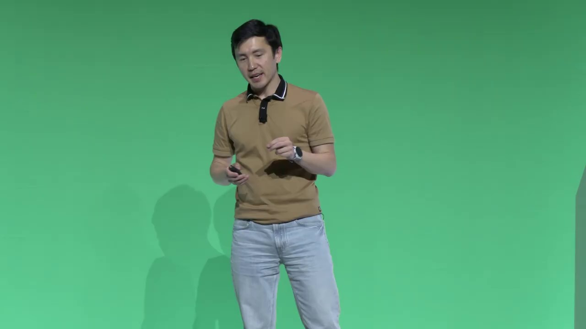
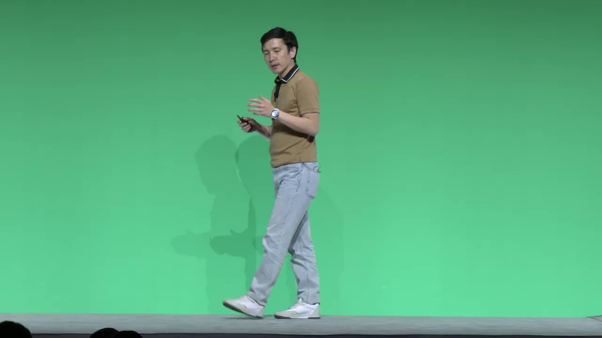
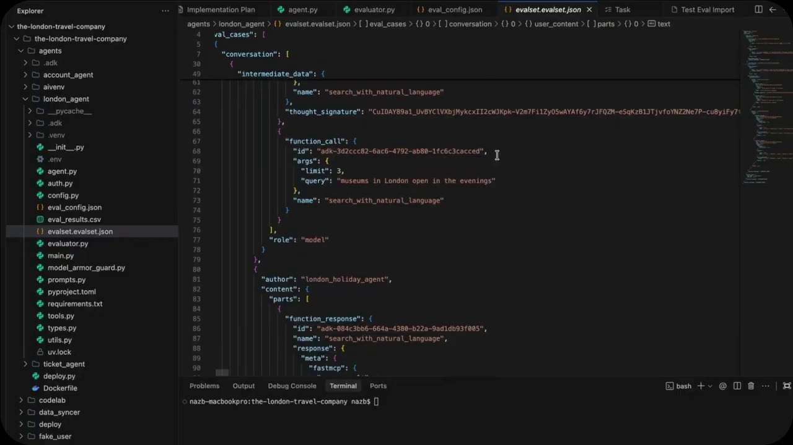
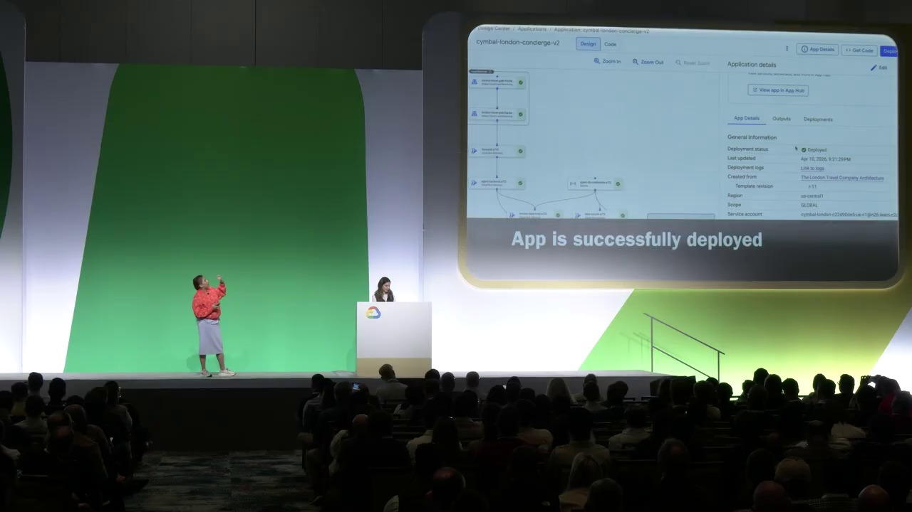
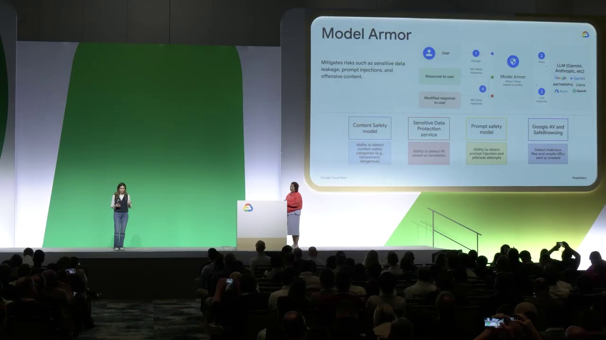
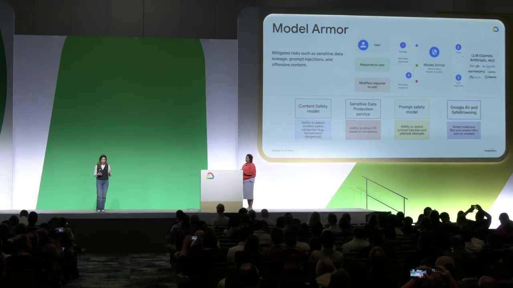
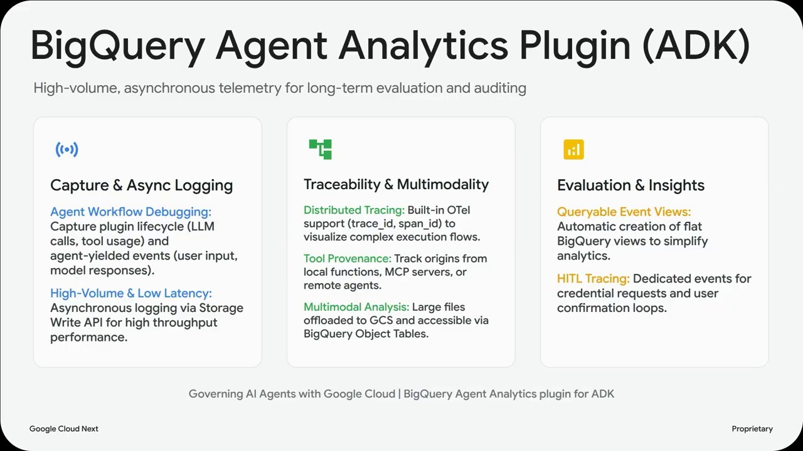
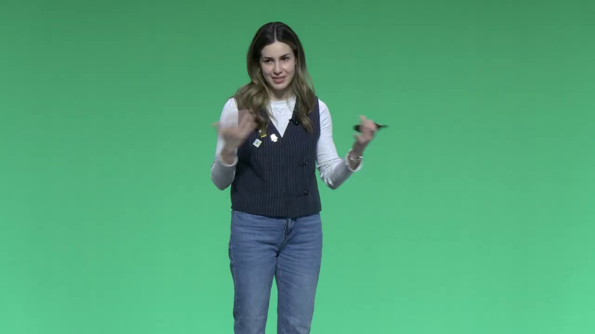

Key Moments










Summary & Script
From prototype to production: 45 minutes to a reliable Gemini Enterprise Agent Platform agent
Source: https://www.youtube.com/watch?v=fkCTifAqVGg
Video ID: fkCTifAqVGg
Overview
In this session Booking.com engineers explain how they turned experimental Gen AI prototypes into reliable, production‑grade agents using Google’s Gemini models and Vertex AI. They walk through the evolution of Booking.com’s AI platform, showcase four real‑world use cases (customer‑facing, internal, partner‑facing, and multimodal), and share the lessons learned about serving strategies, governance, and developer enablement. The talk is followed by Google Cloud specialists who outline best‑practice principles for evaluating, deploying, securing, and observing agents in production.
Topics Covered
- Booking.com AI background – over a decade of predictive ML, ≈ 500 k RPS with 50 ms latency; recent shift to Gen AI and multi‑provider ecosystem.
- Evolution of the AI stack – from a simple “wrapper” in 2023, to a multi‑provider gateway with built‑in governance, to a full‑life‑cycle AI platform covering evaluation, safety, and agentic capabilities.
- Use‑case showcase (presented by Maria)
- Know Before You Go – customer‑facing travel planner that combines Gemini with Google Maps and search grounding to generate itineraries and airport‑to‑hotel routes.
- Big Bot – internal data‑registry chatbot enabling employees to locate data assets and create workflows via natural language.
- Partner Analytics – host‑facing tool that extracts pain‑point signals from traveler reviews to surface actionable themes for partners.
- Reels to Reality – multimodal agent that turns short‑form travel videos (YouTube URLs) into concrete itineraries on the Booking.com app.
- Serving strategy lessons – default on‑demand Vertex AI serving is insufficient for latency‑critical or multimodal workloads; they moved to provisioned throughput and priority processing as needed.
- Platform adoption & enablement – importance of clear documentation, hackathons, and self‑service guidance to help squads move from experiments to production.
- Google Cloud best‑practice segment – four pillars for production agents: evaluation (response vs. trajectory), rapid code‑to‑cloud deployment, identity & access management, and security/observability. Demonstrated with a travel‑concierge demo involving multiple agents, Weather MCP, Cloud SQL, Agent Engine, and Model Armor.
- Evaluation techniques – human review, LLM‑as‑judge for response evaluation, and automated trajectory metrics (tool calls, parameters, collaboration) specific to agents.
Key Takeaways
- Building reliable agents is as much about the serving infrastructure and governance as it is about picking a powerful model.
- One serving tier does not fit all; match Vertex AI options (on‑demand, provisioned throughput, priority processing) to the latency and scale requirements of each use case.
- A governed, multi‑provider AI platform enables rapid experimentation while maintaining safety, observability, and compliance.
- Providing clear, self‑service onboarding material and regular community events accelerates adoption across a large organization.
- Agent evaluation must consider both the final response and the internal “trajectory” (tool usage, parameters, collaboration) to ensure correctness and traceability.
- Using an LLM as a judge and automated metrics scales evaluation, but human judgment remains essential for complex or high‑risk scenarios.
- Security, identity, and auditability are integral from the start; Google Cloud’s Model Armor and Agent Engine help enforce these controls.
Notable Quotes
- “It’s not just about choosing the right model. It’s about how we serve the LLMs and make them easy to use across our organization.”
- “One size does not fit all when it comes to serving tiers.”
- “Building the platform is only half the job for us. The other half is helping users understand what’s available, when to use which tool, and how to get started.”
- “If I had to summarize our journey in one sentence: Booking.com has been moving from isolated Gen AI experiments to a governed multi‑provider production‑ready AI ecosystem.”
Podcast Script
JORDAN: Welcome to Episode 6 of SlackCasts by PodSlacker — where AI does the watching so you can do the listening. If you want a richer experience with today's episode, visit PodSlacker dot com slash SlackCasts — you'll find a written summary, key frame moments from the video, and an interactive AI chat to explore the topic as deep as you like. Now let's get into it.
MIKE: Jordan, the Booking.com team just gave us a masterclass in taking Gen AI from sandbox to production. Let’s start with the big picture: a decade of predictive ML, half‑a‑million RPS at 50 ms, now layering Gemini on top. How does that legacy shape their approach to Gen AI?
JORDAN: Their existing stack forces a hard latency SLA, so any generative layer must respect the 50 ms tail latency at P99. That’s why they model Gen AI as a commodity service rather than a front‑end feature; the underlying traffic patterns dictate strict throughput guarantees.
MIKE: Right, and that’s reflected in their evolution roadmap: from a “wrapper” in 2023 to a multi‑provider gateway with built‑in governance, then a full‑life‑cycle platform. What were the functional inflection points in that journey?
JORDAN: Initially they just proxied OpenAI‑style APIs. Early 2024 they added in‑house models and a provider‑agnostic router, then introduced a governance layer—rate limits, content filtering, audit logs—so internal squads could request any model but still stay compliant. The final platform now includes evaluation pipelines, safety guardrails, and agentic orchestration primitives.
MIKE: That governance layer is critical for a regulated industry like travel. Speaking of agents, Maria walked us through four use cases. Let’s break down “Know Before You Go.” How does the Gemini‑plus‑Maps stack actually work?
JORDAN: They feed the user’s itinerary constraints into Gemini, then invoke the Google Maps grounding API to fetch real‑time airport‑to‑hotel routes. The model orchestrates tool calls: first a search grounding to retrieve POI data, then a routing call, finally stitching a natural‑language plan. It’s a classic “retrieval‑augmented generation” pipeline but with live geographic context.
MIKE: The latency challenge there is non‑trivial. A multi‑step tool chain can easily exceed 100 ms. How did they meet the performance target?
JORDAN: By moving from on‑demand Vertex AI to provisioned throughput for that specific agent, reserving token capacity and pre‑warming the model. They also prioritize the routing calls in Vertex’s priority processing tier, ensuring the MAPS RPCs get low‑latency paths.
MIKE: Next, “Big Bot” is an internal data‑registry chatbot. What’s the value proposition beyond a simple FAQ bot?
JORDAN: It allows data engineers to query the internal catalog using natural language, then automatically triggers workflow creation via a tool‑call to their orchestration layer. The agent parses intent, resolves asset identifiers, and emits a DAG definition—all without manual scripting.
MIKE: That internal usage also serves as a safety net: they can monitor tool usage patterns and spot anomalous data requests. Moving to the partner‑facing “Partner Analytics” tool—what’s the signal extraction pipeline?
JORDAN: They ingest traveler reviews, run Gemini to extract sentiment‑tagged entities (e.g., “pool,” “breakfast”), then aggregate frequencies to surface actionable themes. The key is that they treat the LLM as a structured parser rather than a generator, feeding the output into a downstream analytics dashboard.
MIKE: And finally “Reels to Reality”—the multimodal showcase. How do they handle YouTube URLs as inputs?
JORDAN: Gemini’s multimodal endpoint ingests the video URL, pulls key frames via YouTube’s API, and runs a vision‑language model to extract location cues and activity descriptors. Those cues seed a planning graph, which is then turned into a concrete itinerary via the same tool‑call pattern we saw earlier.
MIKE: Multimodal adds a whole new latency dimension—video decoding, frame extraction, vision inference. What serving strategy did they adopt?
JORDAN: They upgraded to Vertex AI’s priority processing tier with GPU‑accelerated nodes, ensuring the vision pipeline meets sub‑second response times. They also reserve higher token throughput because video captions can be long.
MIKE: So the common thread is matching the Vertex tier to the workload. What lessons did they surface about serving tiers?
JORDAN: One size does not fit all. On‑demand works for low‑traffic proof‑of‑concepts, but production agents—especially those with tool calls or multimodal inputs—need provisioned throughput for predictable latency, and priority processing for bursty, compute‑heavy calls.
MIKE: Governance and observability were also front‑and‑center. How does Booking.com instrument and audit these agents?
JORDAN: Their gateway logs every model invocation, tool call, and parameter set to Cloud Logging, ties it to a request ID, and feeds the data into a custom dashboard for latency‑SLA monitoring. They also enforce Model Armor policies that restrict outbound network calls, ensuring agents can’t inadvertently leak data.
MIKE: That dovetails nicely into the Google Cloud best‑practice segment. They framed four pillars: evaluation, rapid deployment, identity/access, and security/observability. Let’s unpack evaluation first.
JORDAN: They split it into response evaluation—comparing the final text against a gold set—and trajectory evaluation—inspecting the sequence of tool calls, parameters, and inter‑agent collaborations. For response evaluation they use both human reviewers and an LLM‑as‑judge model for scalability.
MIKE: The trajectory metrics are fascinating: they quantify tool‑call correctness, parameter fidelity, and collaboration success. How do they automate that?
JORDAN: Using the Agent Development Kit (ADK), each tool call emits a structured event. The evaluation harness aggregates these events, then runs a secondary LLM to score the “reasonableness” of the call sequence against expected patterns. This produces a composite score that reflects both output quality and process integrity.
MIKE: And for rapid code‑to‑cloud deployment, what does the demo illustrate?
JORDAN: They push a Python‑based agent to Vertex AI via a CI/CD pipeline that builds a container, registers it with the Agent Engine, and automatically attaches Model Armor policies. The process takes under five minutes from commit to live endpoint, demonstrating “GitOps for agents.”
MIKE: Identity and access management is another pillar. How do they ensure the right principle of least privilege?
JORDAN: Each agent runs under a dedicated service account with scoped IAM roles: read‑only on Cloud SQL for the weather MCP, no external network egress unless whitelisted. Agent Engine also supports token‑based authentication, so downstream tools can verify the caller’s identity before honoring a request.
MIKE: Security wise, Model Armor seems central. What protections does it provide?
JORDAN: Model Armor enforces runtime policies like disallowing direct internet egress, limiting token generation rates, and applying content filters on model outputs. It acts as a side‑car interceptor that can reject unsafe responses before they leave the Vertex endpoint.
MIKE: Observability wraps everything up. Beyond logs, what signals do they surface?
JORDAN: They emit custom metrics to Cloud Monitoring: request latency per tier, token usage, tool‑call success rates, and LLM‑as‑judge scores. Alerts fire on SLA breaches, and Trace integrates with Cloud Profiler to pinpoint hot paths in the agent orchestration flow.
MIKE: Bringing it back to the organizational side, Booking.com emphasized developer enablement. What tactics helped them scale adoption?
JORDAN: They produced self‑service documentation, run quarterly hackathons, and maintain a curated catalog of pre‑built agents with sample code. The platform team also offers “office hours” to help squads onboard, turning the platform from a backend service into a developer product.
MIKE: That cultural layer is often the missing piece in AI rollouts. To close, what are the key takeaways for our listeners building their own production agents?
JORDAN: First, treat serving infrastructure as a first‑class concern—choose Vertex AI tiers that match latency and throughput needs. Second, embed governance, audit logs, and Model Armor from day one. Third, evaluate both response quality and trajectory fidelity, leveraging LLM‑as‑judge for scale but retaining human oversight for high‑risk cases. Fourth, invest in developer enablement—clear docs, sample agents, and community events accelerate adoption.
MIKE: And remember, the model is just one piece of the puzzle; the real competitive advantage comes from a robust, governed platform that lets developers focus on business logic, not on rewiring the cloud each time.
JORDAN: That's a wrap on today's SlackCast. Head over to PodSlacker dot com slash SlackCasts for the written summary, visual key moments, and an AI chat to dive even deeper into today's topic. Until next time — slack off smarter.